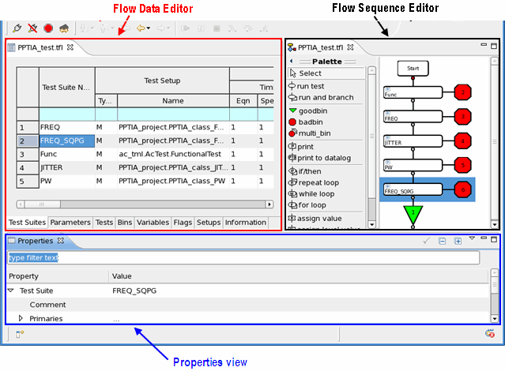

Elements of the Testflow Tool
The Testflow Tool has two editors to develop and debug the testflow:
Both editors process the same testflow file which is located in the <device directory>/testflow directory.
They provide two different ways to represent the information in the testflow file.
The Flow Data Editor displays the testflow elements in a tabular way. The spreadsheet-style representation of the testflow elements provides a good overview over the different testflow components and helps in debugging scenarios.
The Flow Sequence Editor displays the flow diagram of the test, which provides the information of the testflow structure.
The Properties view displays the properties of the selected test suite.

Functional changes
- Introduced before SmarTest 6.3.2
- SmarTest 6.5.2: Flow Sequence Editor is integrated into SmarTest Eclipse Work Center.
- SmarTest 6.5.2: Properties view replaces Testsuite view.